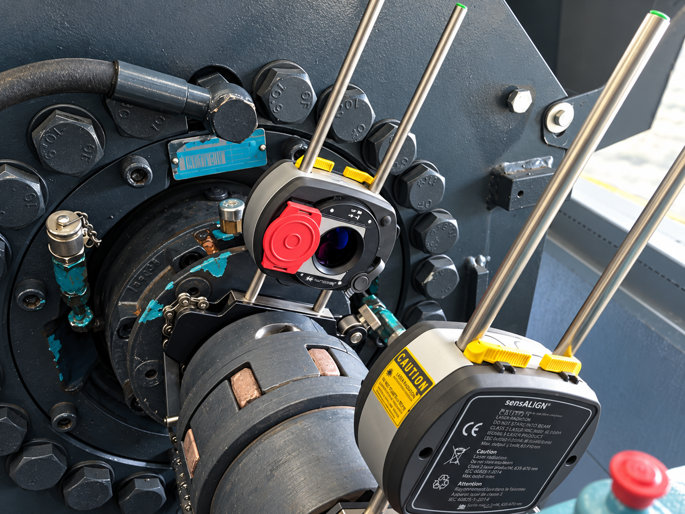
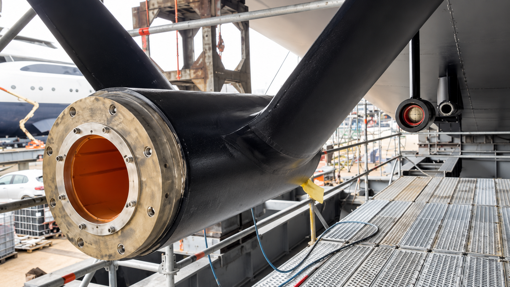
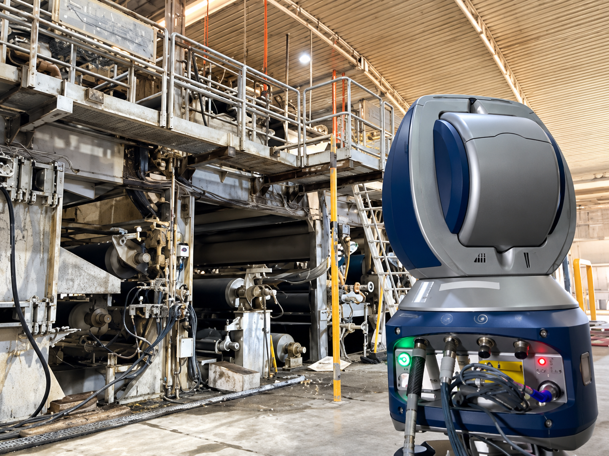
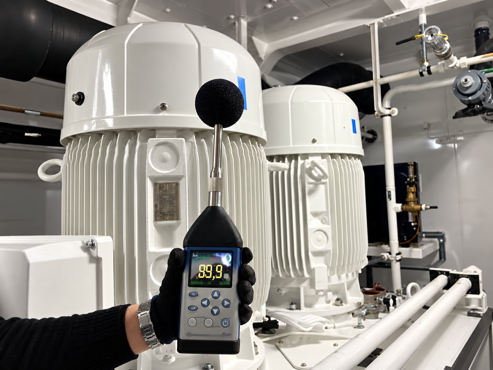

Análisis de vibraciones
Diagnóstico de desequilibrios, holguras, resonancias y defectos en rodamientos o engranajes mediante espectros, formas de onda y tendencias.
Ingeniería de mantenimiento · Valencia
Detectamos el origen de los problemas mecánicos y definimos la intervención necesaria con datos fiables.
Desde 2013Experiencia de campo
Naval · Papel · IndustriaEntornos productivos exigentes
Servicio in situMedición, diagnóstico y corrección
Servicios
Desde el diagnóstico inicial hasta la corrección y verificación final, trabajamos sobre la causa del fallo y su impacto en la producción.
Diagnóstico de desequilibrios, holguras, resonancias y defectos en rodamientos o engranajes mediante espectros, formas de onda y tendencias.
Alineación de ejes acoplados, ejes con espaciador, configuraciones verticales y transmisiones especiales.
Equilibrado dinámico en uno o dos planos, realizado in situ o en taller según el equipo y sus condiciones de operación.
Concentricidad, planitud, nivelación, geometría, posicionamiento y comprobaciones con tecnología láser.
Planes de inspección, criticidad de activos y seguimiento de condición para anticipar fallos y priorizar intervenciones.

Trabajo de campo
Las condiciones reales de operación importan. Por eso combinamos instrumentación específica, conocimiento mecánico y observación directa del equipo.



Deneb Machinery Services
Desde 2013 trabajamos con equipos de mantenimiento de los sectores naval, papelero y de gran industria. Convertimos mediciones complejas en acciones concretas, verificables y ajustadas a cada máquina.
Contacto
Indica la máquina, el síntoma y la urgencia. Te responderemos con el siguiente paso.
lorenzosoler@denebms.com Gran Vía 111 · 46008 Valencia